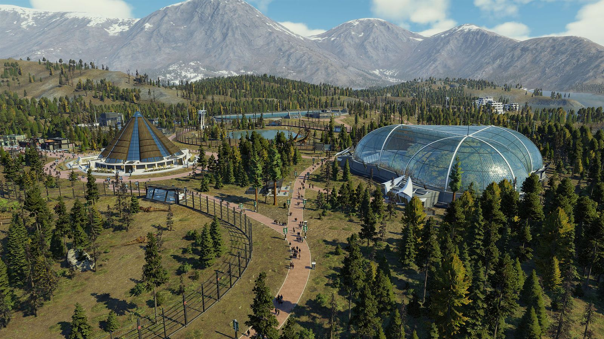

Jurassic Evolution 2 is the much-anticipated sequel to Frontier’s highly successful Jurassic World Evolution, building upon the ground-breaking and immersive 2018 management simulation. It introduces a compelling new narrative campaign, incredible new features, a range of new locations, and awe-inspiring new dinosaurs brought to life with captivating authenticity. Together with expanded construction and more customisation options, the result is an even bigger, better Jurassic World game, created with captivating authenticity.
Take control with deeper management tools and creative options. Construct a range of new and customisable buildings, shape your park to meet the demands and needs of your guests and your dinosaurs, manage your new Veterinary Units and Scientists, and test your skills across never-before-seen locations, ranging from dense forests to rocky deserts and more, as you deal with new environmental challenges. You can unleash your creativity in Sandbox mode, or truly test your managing skills in Challenge mode.
More than 75 different prehistoric species come to life in Jurassic World Evolution 2, including highly requested flying and marine reptiles, and returning community-favourite dinosaurs. These majestic creatures feel more alive than ever as they preside over territory, and display brand-new behaviours when interacting with each other, fighting for dominance, and reacting intelligently to the world around them. Players can use bioengineering to customise their dinosaurs with bold new colours and pattern colours, and alter their genomes to unlock different traits.